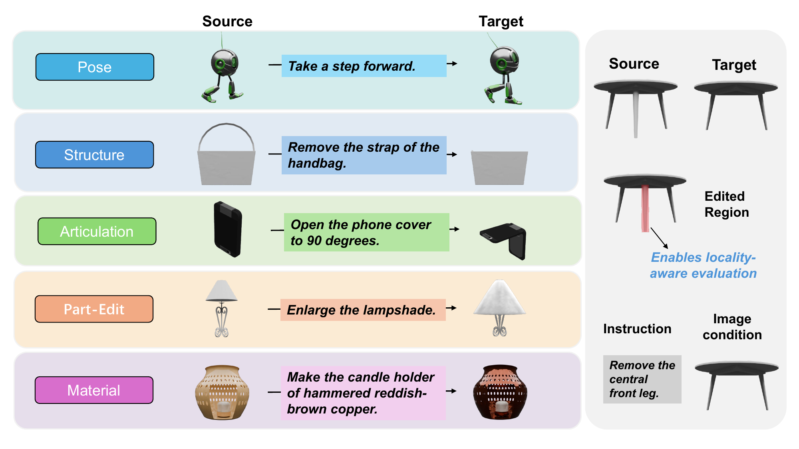
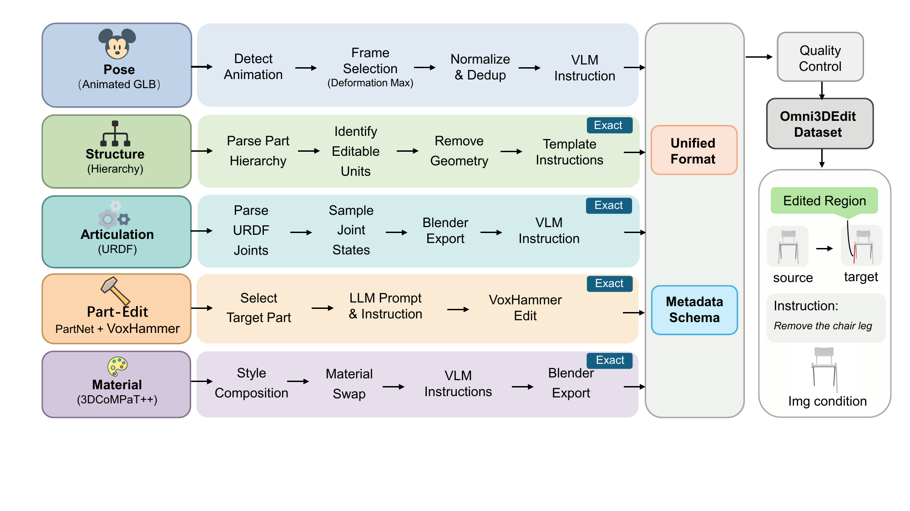

Problem
Most 3D editing benchmarks evaluate whether an edit looks plausible, but they do not explicitly check where the model changed geometry or appearance.
Project Overview
Most 3D editing benchmarks evaluate whether an edit looks plausible, but they do not explicitly check where the model changed geometry or appearance.
Omni3DEdit provides edited-region annotations so evaluation can measure faithfulness, preservation, and locality in a unified protocol.
A practical benchmark suite with standardized assets, region-aware metrics, and strong baselines for instruction-guided 3D editing.
Instruction-guided 3D editing has moved quickly from optimization-heavy pipelines to native 3D foundation models. Yet prior benchmarks rarely include explicit edited-region supervision or a standardized protocol for assessing if models edit the intended parts and preserve the rest. Omni3DEdit addresses this gap with 128,906 paired source-target assets across five edit families, each with instruction text and edited-region annotation.
Dataset
Pose
23,648 pairs
Pose changes from animated or rigged assets with frame pairs selected by deformation magnitude.
Structure
40,000 pairs
Rigid part add/remove operations built from hierarchical part annotations.
Articulation
6,875 pairs
Joint-state edits with motion-aware edited regions derived from kinematic sweeps.
Part-Edit
26,407 pairs
Local free-form geometry edits with explicit part targeting and realistic instructions.
Material
31,976 pairs
Appearance-only changes on texture or PBR materials while preserving geometry.

Method

Benchmark
Evaluate whether the generated edit follows user intent described in natural language and keeps the semantic direction of transformation.
Check structural and visual stability in untouched regions to ensure edits remain localized rather than globally destructive.
Analyze where changes happen and whether the modified support aligns with target edit regions.
Keep one unified protocol across multiple edit families, enabling consistent comparison under different task settings.
Results
This page presents benchmark design, task setup, and qualitative demonstrations without exposing internal quantitative tables.
Detailed scores and leaderboard entries can be shared later in a controlled release according to your publication timeline.
Protocol descriptions and code links remain available so others can understand and reproduce the evaluation process.
Citation
@inproceedings{fan2026omni3dedit,
title = {Omni3DEdit: A Unified 3D Editing Benchmark with Region Annotations},
author = {Fan, Hongxing and Lu, Haotian and Chen, Rui and Yun, Weibin and Huang, Zehuan and Sheng, Lu},
booktitle = {Proceedings of the ACM International Conference on Multimedia},
year = {2026}
}